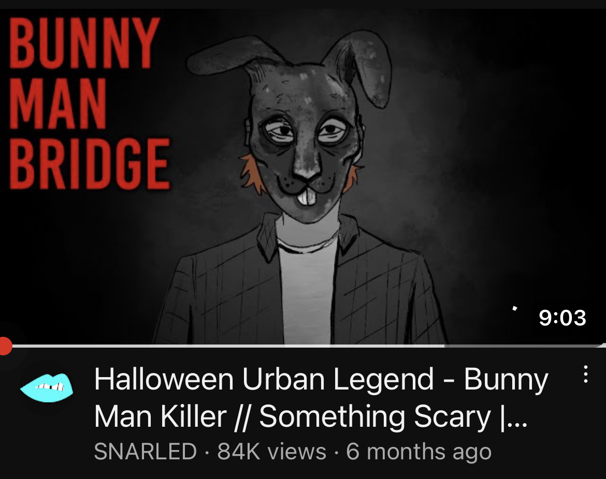
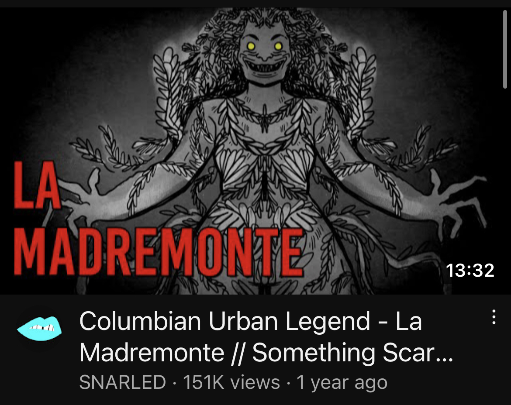
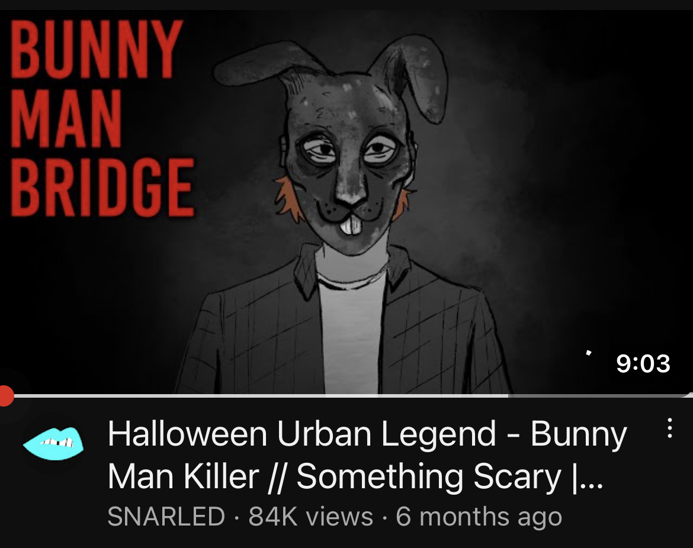
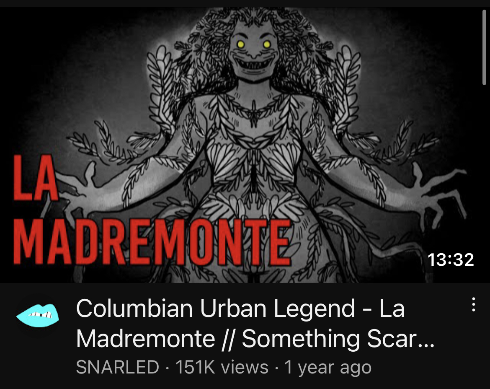

Giara Lopez
I am an aspiring author/screenwriter. To prepare myself for the bigger world, I have already taken up plenty of opportunities, all of which have taught me many skills that have, and will continue to, make my work the best that it can be.
At age 15, I joined the WriteGirl program for teen writers. There, I was lucky enough to be offered a mentorship with a successful screenwriter and actor. During my time with my mentor, I worked through my writing abilities. I was taught about the world of networking across the Creative Writing industry, and I began to familiarize myself with it. After a while with my mentor, she asked that I partake in an experimental employee program for a podcast she worked for. This podcast is known as SNARLED on YouTube and Something Scary on Spotify. I have written a few stories for them, some of which were animated on their YouTube site, and others that were read out on the podcast. To this day, I still write for them on occasion. However, I have since began taken classes at the University of California, Riverside. There, I have been workshopping different short stories in classes alongside plenty of other aspiring writers. This has inspired me to start writing a trilogy. I plan to finish the first book by the end of my years at this college.
I've done workshops with both UC Riverside and with WriteGirl. Both have taught me plenty about how writing for books, TV, or movies will end up being. I've learned to be polite and precise - how to pick through the slightest of details and how to make them better. Not only this, but workshopping has also assisted in teaching me how to network with other writers. Because of my experiences with both UC Riverside and WriteGirl, I'm now able to interact with many types of writing environments. I'm able to take critiques, work with them, and make them better. I am able to give polite critiques for others, and am also able to collaborate on projects with fellow writers. On the other hand, My work with SNARLED has taught me how to be quick. Their deadlines are sharp. I usually get two days to write each story - sometimes less. Once, I was given less than 24 hours, but I have learned to prevail every time. Despite the fact that I must work quickly, I refuse to hand it shoddy work, so I've adjusted to this job and find ways to make my stories quick, yet well done. Aside from writing, I have done a few other things to broaden my horizons. I was once a volunteer at Priceless Pets for a few years, which is an organization that works to care for animals, foster them, and send them on their way toward adoption. That job helped me learn quite a bit; medical tasks, cleaning tasks, time management, patience, and carefulness. Currently, I babysit, which also has taught me how to navigate similar attributes.
Experience
Writer
• Written for a successful horror podcast
• Written several short horror stories
• Short stories are now animated/read
Education
UC Riverside
Portfolio
Portfolio


.jpg)

Portfolio

